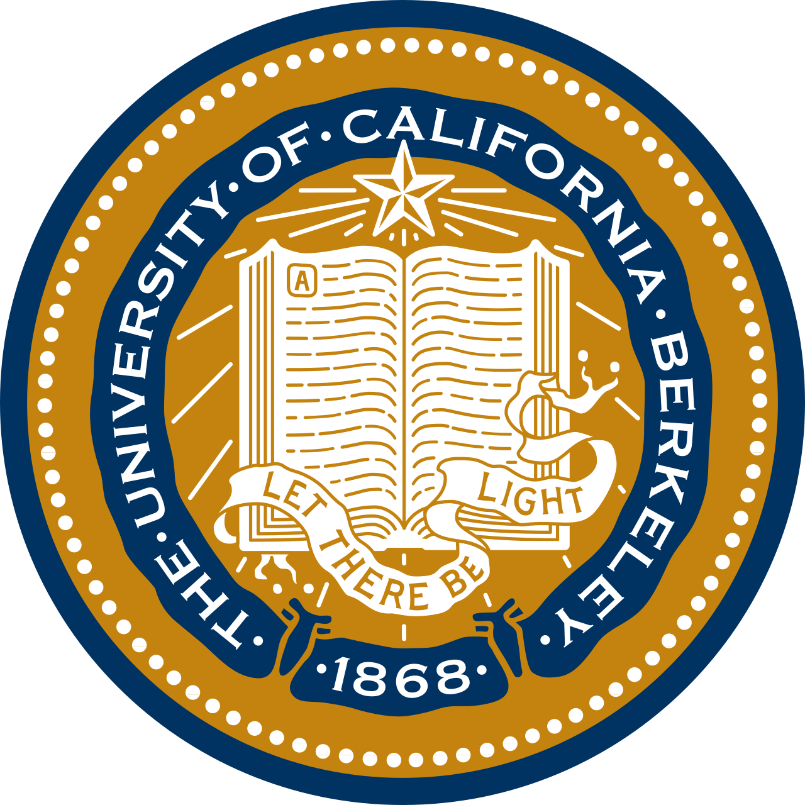

ABOUT
📊 What I Do
I specialize in:
- Data Cleaning and Transformation: Ensuring data integrity and preparing datasets for sophisticated analysis by employing best practices in data wrangling.
- Data Analysis and Visualization: Leveraging tools like Power BI, Tableau, and Python to turn complex data into clear, actionable insights, improving decision-making processes.
- Machine Learning and AI Development: Applying machine learning models to solve real-world problems, particularly in areas like natural language processing and predictive analytics.
🎓 Education
Master of Data Science (GPA: 4.23/4.33)
 University of British Columbia (Vancouver, BC)
University of British Columbia (Vancouver, BC)
Sep 2023 – Jun 2024
Relevant Course: Statistical Inference and Computation, Spatial and Temporal Models, Supervised Learning, Unsupervised Learning, Data Visualization, Algorithms and Data Structures, Collaborative Software Development, Databases and Data Retrieval, Web and Cloud ComputingPublic Economics (Exchange Program) (GPA: 3.7/4.0)
 University of California Berkeley (California, United States)
Jul 2021 – Aug 2021Master of Science in Economics (GPA: 86.7/100)
Huazhong University of Science and Technology (Wuhan, China)
Sep 2020 – Jun 2023Bachelor of Science in Economics (GPA: 88.63/100)
Central China Normal University (Wuhan, China)
Sep 2016 – Jun 2020
🛠️ Capstone Project
Illuminex AI, Data Scientist
Apr 2024 – Jun 2024
• Developed an object detection pipeline using Faster R-CNN, YOLOv8, and RetinaNet, achieving a 60% mAP for bird strike mitigation at Chengdu Shuangliu Airport, surpassing the previous best of 49.5% mAP.
• Pioneered synthetic data augmentation with airplane images, enhancing model realism and boosting predictive accuracy in complex airport environments.
• Managed large-scale datasets on AWS, optimizing models for real-time, high-speed processing, and supporting robust validations. Awarded “Best Talk” in the Master of Data Science program for effectively communicating these complex data insights.
💼 Work Experience
Deloitte
Audit and Assurance Department Intern
Jul 2019 – Aug 2019
• Performed financial analysis on major corporations, including Guangshen Railway Co., increasing the accuracy of financial assessments by 20% through data analysis of over 5,000 data points using Python.
• Conducted data audits and drafted 15+ financial reports using Power BI, creating clear data visualizations that improved report clarity and reduced review time by 30% for senior stakeholders.
Zhongshan Securities
Investment Banking Management Headquarters Intern
Apr 2019 – Jun 2019
• Conducted valuation and financial modeling, achieving a 90% accuracy rate in valuation premiums by analyzing growth rates, profitability, and competitive advantages.
• Streamlined due diligence processes by 20%, performing in-depth financial analysis and capital structure evaluations, resulting in faster and more informed decision-making.
Agricultural Bank of China
Risk Management Department Intern
Jul 2018 – Aug 2018
• Applied machine learning techniques to analyze over 4,000 loans, improving customer ratings and risk assessments accuracy by 10%.
• Collaborated with the risk management team to integrate machine learning insights into financial models, enhancing the accuracy of risk predictions.
❤️ Volunteer
Rural Education Empowerment Plan
Mar 2017 - Oct 2018
- Contributed to the design and implementation of a 1+1+1 educational model, pairing 502 rural teachers with university students for mutual learning, supporting both online research and practical training sessions.
- Supported the development of a 1+X team management model aimed at systematic volunteer management, which expanded the reach to over 600 volunteers and enhanced educational support for 20 primary schools.
- Assisted in establishing partnerships and negotiating with stakeholders such as non-profits and tech companies to secure crucial funding of $29,000, contributing to the project’s sustainability.
- Aided in the development of a comprehensive training program for rural teachers, incorporating ICT tools to facilitate collaborative lesson planning, mixed-mode teaching, and active learning strategies such as flipped classrooms, contributing to an internet resource library for rural education.
- 🏆 Recognized with the 🥇Gold Award in the Fourth ‘Internet+’ University Students Innovation and Entrepreneurship Competition, Hubei Province.
- 🏆 Honored with the 🥇Gold Award in Hubei Province and the 🥈Silver Award in the 2018 “China University Students’ Entrepreneurship Competition Innovation and Entrepreneurship Cup” National Competition.
- 🏆 Awarded the 🥇Gold Award in Hubei Province and the 🥈Silver Award in the 2018 China Youth Volunteer Service Project Competition, Nationwide.
🌟 Achievements and Skills
• Data Visualization: Created visualizations that reduced report review time by 30%.
• Efficiency Improvements: Streamlined data analysis processes, reducing preparation time by 25%.
• Insight Generation: Specialized in transforming complex datasets into actionable business intelligence.